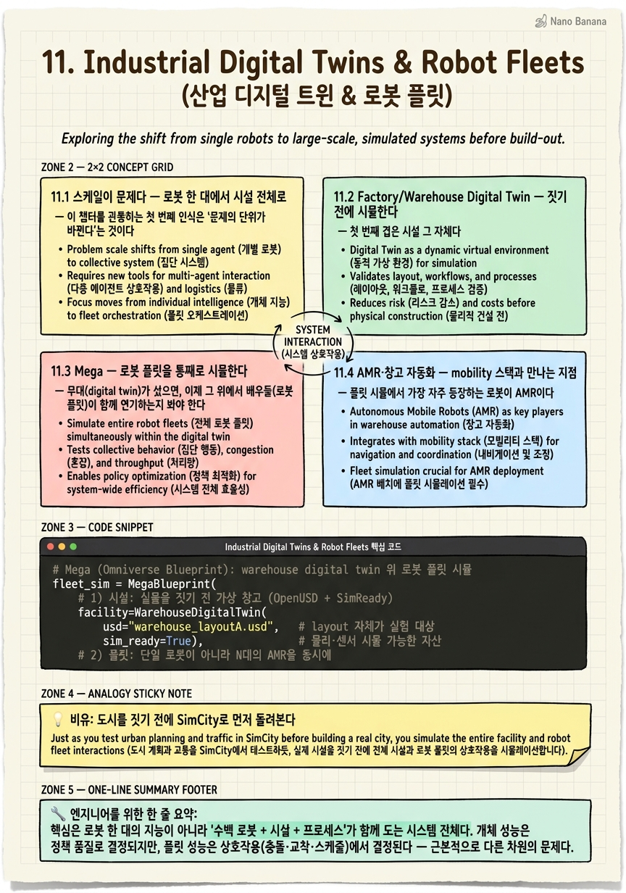

Industrial Digital Twins & Robot Fleets

🎯 학습 목표
- 산업 digital twin이 로봇 개발과 다른 스케일 문제를 안다
- Mega 등 로봇 플릿 시뮬레이션의 목적을 이해한다
- AMR·창고 자동화가 mobility 스택과 연결되는 지점을 본다
- Siemens 등 파트너 통합이 왜 전략적인지 설명한다
- Omniverse가 '산업 OS'로 확장되는 논리를 안다
지금까지의 챕터는 대체로 '하나의 로봇'을 잘 만드는 이야기였다 — 하나의 팔, 하나의 휴머노이드, 하나의 자율주행차를 학습·시뮬·배치하는 스택. 이 챕터는 관점을 한 단계 끌어올린다. 산업 현장의 진짜 문제는 로봇 한 대가 아니라 '수백 대의 로봇 + 시설 + 프로세스'가 함께 돌아가는 스케일이기 때문이다.
공장과 창고를 떠올려 보자. 그곳엔 로봇 팔, AMR(자율 이동 로봇), 컨베이어, 작업자, 재고, 물류 동선이 얽혀 있다. 로봇 하나의 정책이 아무리 완벽해도, 수백 대가 좁은 공간에서 서로 부딪히지 않고 효율적으로 협업하게 만드는 것은 전혀 다른 차원의 문제다. 이 챕터의 핵심 통찰은 여기서 나온다 — 산업 Physical AI는 단일 로봇 문제가 아니라 스케일(fleet·facility·process) 문제이며, 그래서 digital twin이 단순 시뮬 도구를 넘어 운영 체계(OS)가 된다.
이 확장을 세 겹으로 본다. 먼저 시설 자체의 factory/warehouse digital twin — 공장을 짓기 전에 가상에서 layout·로봇 배치·물류를 시뮬·최적화한다. 그 위에서 다수 로봇을 동시에 검증하는 Mega(fleet simulation). 그리고 이 가상 시설과 실제 mobility 스택(AMR·COMPASS)이 만나는 지점.
마지막으로 이 챕터는 왜 NVIDIA가 이 판을 혼자 다 짓지 않는지를 본다. Siemens·Ansys·SAP·Schneider Electric 등 산업계 거인들이 Omniverse를 자사 솔루션에 통합하는 파트너 생태계가 핵심이다. NVIDIA는 이를 통해 Omniverse를 개별 제품이 아니라 '산업 Physical AI의 OS'로 포지셔닝한다. 그 논리를 끝까지 따라가는 것이 이 챕터의 목표다.
핵심 내용
11.1 스케일이 문제다 — 로봇 한 대에서 시설 전체로
이 챕터를 관통하는 첫 번째 인식은 '문제의 단위가 바뀐다'는 것이다.
지금까지의 스택(Omniverse→Isaac Sim→Isaac Lab→policy→Jetson)은 본질적으로 '하나의 로봇을 똑똑하게 만드는' 파이프라인이었다. 하나의 정책을 학습시키고, 하나의 몸에 배치한다. 하지만 실제 공장·창고에 발을 들이면 질문이 달라진다 — 이 로봇 한 대가 아니라, 수백 대가 한 건물 안에서 동시에 움직일 때 전체가 잘 굴러가는가?
산업 Physical AI의 스케일 문제 = 개별 로봇의 지능이 아니라, 다수 로봇(fleet)·시설(facility)·프로세스(process)가 함께 작동하는 시스템 전체를 설계·검증·운영하는 문제.
왜 이것이 근본적으로 다른 문제인가? 로봇 한 대의 성능은 개체의 정책 품질로 결정되지만, 100대의 협업 성능은 개체가 아니라 상호작용에서 결정된다 — 교차로에서 누가 양보하는가, 병목 구간에서 어떻게 줄을 서는가, 한 대가 고장 나면 나머지가 어떻게 재배치되는가. 이것은 로봇 지능의 문제가 아니라 시스템·오케스트레이션의 문제다.
게다가 산업 현장에는 로봇만 있는 게 아니다. layout(설비 배치), 컨베이어, 작업 동선, 재고 흐름, 인간 작업자가 로봇과 얽힌다. 이 모든 것을 실물로 지어놓고 시행착오하기엔 비용과 위험이 너무 크다 — 잘못된 layout으로 공장을 짓고 나면 되돌릴 수 없다.
그래서 해법의 무게중심이 이동한다. '로봇을 학습시키는 시뮬레이터'였던 Omniverse가, 여기서는 '시설 전체를 통째로 복제한 digital twin'으로 확장된다. 다음 절부터 이 확장을 시설(11.2)·플릿(11.3)·mobility 연결(11.4)의 세 겹으로 뜯어본다.
11.2 Factory/Warehouse Digital Twin — 짓기 전에 시뮬한다
첫 번째 겹은 시설 그 자체다. 로봇을 넣기 전에, 공장·창고라는 무대를 통째로 가상에 짓는다.
Omniverse for factories = 공장·창고 전체를 digital twin(디지털 트윈)으로 복제해, layout(설비 배치)·로봇 배치·물류(logistics)를 실물을 짓기 전에 가상에서 시뮬레이션하고 최적화하는 활용.
핵심 가치는 '순서를 뒤집는다'는 데 있다. 전통적으로는 공장을 먼저 짓고, 돌려보고, 문제가 생기면 고쳤다. digital twin은 이 순서를 뒤집는다 — 가상에서 먼저 지어 온갖 layout을 실험하고, 물류 병목을 찾아내고, 로봇을 어디에 몇 대 둘지 최적화한 뒤에 실물을 짓는다. 콘크리트를 붓기 전에 실수를 발견하는 것이다.
무엇을 시뮬하는가를 구체적으로 보면.
-
layout 최적화 — 설비·랙·통로를 어떻게 배치해야 동선이 짧고 병목이 없는가.
-
로봇 배치(placement) — 로봇 팔·AMR을 어디에 몇 대 두어야 처리량이 최대인가.
-
물류(logistics) 흐름 — 자재가 입고에서 출고까지 흐르는 경로가 효율적인가, 어디서 막히는가.
이것을 가능하게 하는 기술 토대가 OpenUSD와 SimReady다. OpenUSD는 서로 다른 도구(CAD·PLM·로봇 SW)에서 온 방대한 산업 데이터를 하나의 장면으로 조립하는 공통 언어이고, SimReady는 그 3D 자산들이 '단지 보기 좋은 모델'이 아니라 물리·센서 시뮬에 바로 쓸 수 있도록 물성·의미 정보를 갖춘 상태를 뜻한다. 즉 digital twin이 진짜 시뮬로 작동하려면, 시각적 복제를 넘어 물리적으로 정확해야 하고, 그 기준을 OpenUSD·SimReady가 만든다.
결국 factory digital twin은 이 챕터의 스케일 문제를 푸는 '무대'다. 개별 로봇 정책이 아니라 시설 전체의 배치·흐름을 다루며, 실물 리스크 없이 무한히 실험할 수 있는 공간을 연다. 이 무대 위에 이제 '수백 대의 로봇'을 올려 검증하는 것이 다음 절의 Mega다.
11.3 Mega — 로봇 플릿을 통째로 시뮬한다
무대(digital twin)가 섰으면, 이제 그 위에서 배우들(로봇 플릿)이 함께 연기하는지 봐야 한다. 그 리허설을 담당하는 것이 Mega다.
Mega(메가) = 로봇 플릿 시뮬레이션(fleet simulation)을 위한 Omniverse Blueprint. 창고·공장의 digital twin 안에서 다수의 로봇·AMR을 동시에 돌려, 그들의 정책(policy)과 스케줄(schedule)을 실물 배치 전에 검증한다.
11.2가 '시설'을 시뮬했다면 Mega는 '그 시설 안의 로봇 무리'를 시뮬한다. 둘의 관계는 무대와 리허설이다 — digital twin이 정적인 무대를 세우면, Mega는 그 위에서 수십·수백 대가 실제로 함께 움직이는 동적 시나리오를 돌린다.
Mega가 검증하는 것이 무엇인지가 핵심이다. 개별 로봇의 정책이 아니라 플릿 수준의 상호작용이다.
-
정책(policy) 검증 — 여러 로봇이 같은 공간에서 각자의 정책대로 움직일 때 충돌·교착 없이 협업하는가.
-
스케줄(schedule) 검증 — 어떤 로봇에 어떤 작업을 언제 배정해야 전체 처리량이 최대인가, 병목은 어디서 생기는가.
왜 이것을 실물 대신 시뮬로 하는가? 이유는 11.1의 스케일 문제와 직결된다. 100대 로봇의 상호작용은 조합적으로 폭발해, 실물로 모든 시나리오를 시험하는 것은 불가능하고 위험하다(로봇끼리 충돌하면 손해다). 반면 digital twin 안에서는 layout·로봇 수·스케줄 정책을 파라미터처럼 바꿔가며 수천 번 리허설할 수 있다. 물류 병목이나 교착(deadlock)을 실물 창고가 아니라 가상에서 미리 잡아내는 것이다.
'Blueprint'라는 형식도 짚어야 한다. Omniverse Blueprint = 특정 산업 워크플로우를 곧바로 시작할 수 있게 조립해 놓은 참조 구현(reference workflow). 즉 Mega는 개발자가 맨바닥부터 플릿 시뮬을 짜지 않고, 검증된 틀 위에서 자기 창고를 얹어 시작하도록 돕는 패키지다. 이는 앞선 GR00T-Dreams나 Cosmos 워크플로우들처럼 NVIDIA가 '연구·능력을 재현 가능한 청사진으로 배포'하는 일관된 방식의 산업 버전이다. 정리하면 Mega는 digital twin이라는 무대를 '단일 로봇 검증'에서 '플릿·시설·프로세스 검증'으로 끌어올리는 열쇠다.
11.4 AMR·창고 자동화 — mobility 스택과 만나는 지점
플릿 시뮬에서 가장 자주 등장하는 로봇이 AMR이다. 여기서 이 챕터는 앞선 mobility 스택(Chapter 9)과 다시 연결된다.
AMR(Autonomous Mobile Robot, 자율 이동 로봇) = 창고·공장 안을 스스로 돌아다니며 자재를 운반하는 이동 로봇. 정해진 레일을 따르는 구형 AGV와 달리, 환경을 인식해 경로를 스스로 정한다.
창고 자동화의 핵심에 AMR이 있는 이유는 명확하다 — 창고 노동의 상당 부분이 '물건을 A에서 B로 옮기는 이동'이고, 이 이동을 무리 지어 자율화하는 것이 AMR이다. 그리고 AMR이 '스스로 경로를 정해 안전하게 이동한다'는 능력은, 바로 이 코스가 앞서 다룬 mobility 스택이 푸는 문제 그 자체다.
그 연결 고리가 COMPASS(Chapter 9)다. COMPASS는 cross-embodiment mobility 워크플로우로, 다양한 몸체의 로봇에게 '환경을 인식하고 목적지로 이동하는' 능력을 학습시킨다. 창고의 AMR은 이 mobility 능력을 실제 산업 현장에서 쓰는 대표적 사례다 — 개별 AMR의 '어떻게 이동할까'는 COMPASS 같은 mobility 정책이 풀고, 'AMR 무리 전체가 어떻게 협업할까'는 Mega의 플릿 시뮬이 푼다.
이 분업 구조가 이 코스 전체를 하나로 엮는 지점이다.
-
개체 지능(single-robot) — 한 대의 AMR이 잘 이동하는가: mobility 정책(COMPASS), Isaac Lab 학습, Jetson 배치.
-
집단 오케스트레이션(fleet) — 수백 대의 AMR이 시설 안에서 함께 잘 도는가: factory digital twin + Mega 플릿 시뮬.
즉 창고 자동화는 앞 챕터들의 mobility 스택(개체)과 이 챕터의 digital twin·Mega(집단)가 만나는 접점이다. 하나의 AMR을 똑똑하게 만드는 능력과, 그 똑똑한 AMR을 수백 대 묶어 시설을 운영하는 능력이 여기서 합쳐진다. 이 합류가 다음 절에서 볼 '산업 OS'라는 더 큰 그림의 실질적 내용을 이룬다.
11.5 파트너 생태계와 '산업 Physical AI OS'
마지막 겹은 이 모든 것을 관통하는 전략적 질문이다 — 왜 NVIDIA는 이 판을 혼자 다 만들지 않는가?
답은 산업 현장의 데이터와 소프트웨어가 이미 특정 회사들의 손에 있기 때문이다. 공장 설계는 Siemens, 물리 해석은 Ansys, 자원 관리(ERP)는 SAP, 전력·설비는 Schneider Electric, 데이터는 Databricks가 이미 장악하고 있다. NVIDIA가 이들을 대체하려 들면 아무도 쓰지 않는다. 대신 자기들의 digital twin 층으로 이들을 흡수하는 전략을 택한다.
파트너 생태계(partner ecosystem) = Siemens·Ansys·SAP·Schneider Electric·Databricks·Omron·Dematic 등 산업계 주요 기업들이 Omniverse를 자사 솔루션에 통합해, 각자의 데이터·도구를 공통 digital twin 위에서 함께 쓰게 되는 연합.
왜 이 통합이 전략적으로 결정적인가? OpenUSD라는 공통 언어(11.2) 덕분에, 이 파트너들의 이질적인 데이터 — CAD 모델, 물리 해석 결과, ERP 재고, 전력 설비 정보 — 가 하나의 digital twin 장면으로 모인다. 즉 Omniverse는 '또 하나의 산업 소프트웨어'가 아니라, 기존 산업 소프트웨어들이 그 위에서 만나는 공통 기반이 된다. 파트너가 늘수록 그 기반의 가치가 커지는 네트워크 효과가 작동한다.
이 지점에서 이 챕터의 궁극적 통찰이 나온다.
산업 Physical AI OS = 개별 로봇·도구가 아니라 '수백 로봇 + 시설 + 프로세스'라는 스케일 문제를 다루는 운영 체계로서의 digital twin. NVIDIA는 Omniverse를 이 자리에 포지셔닝한다.
OS라는 비유가 정확한 이유가 있다. 컴퓨터의 OS가 CPU·메모리·주변장치를 추상화해 그 위에서 온갖 앱이 돌게 하듯, 산업 digital twin은 로봇·설비·물류·파트너 소프트웨어를 하나의 가상 시설로 추상화해 그 위에서 설계·시뮬(Mega)·최적화·운영이 돌게 한다. 산업 Physical AI의 문제가 개체가 아니라 스케일이므로, 필요한 것은 더 똑똑한 로봇 한 대가 아니라 그 무리를 얹어 돌릴 운영 체계다.
그리고 이 확장은 공장·창고에서 멈추지 않는다. Omniverse DSX Blueprint(2025~2026) = gigawatt급 AI factory(즉 대형 데이터센터) 자체를 digital twin으로 구축·운영하는 청사진으로, 역시 OpenUSD·SimReady를 토대로 한다. AI를 학습시키는 데이터센터마저 digital twin으로 설계·운영한다는 것은, '시설을 가상으로 짓고 돌린다'는 이 챕터의 논리가 산업 전반으로 번지고 있음을 보여준다. 요컨대 NVIDIA는 로봇 회사도, 시뮬 회사도 아닌 '산업 Physical AI의 OS 제공자'로 스스로를 세우고 있으며, 파트너 생태계가 그 OS 위의 앱 마켓 역할을 한다.
💡 비유로 이해하기
산업 digital twin과 로봇 플릿을 이해하려면, 도시 계획가가 실제로 콘크리트를 붓기 전에 SimCity 같은 시뮬레이션 안에서 도시를 통째로 먼저 돌려보는 장면을 떠올리면 된다. 도로를 어디에 깔고, 발전소를 어디에 두고, 교통 흐름이 어디서 막히는지 — 이 모든 걸 가상에서 수백 번 실험한 뒤에야 실제 도시를 짓는다. factory/warehouse digital twin이 바로 이 SimCity다. 공장을 짓기 전에 layout·로봇 배치·물류를 가상에서 최적화하는 것이다.
하지만 도시가 진짜 살아 있으려면 건물만으로는 안 된다. 그 안을 오가는 수만 명의 시민, 버스, 택시가 서로 부딪히지 않고 흘러야 한다. 도시 계획가가 정작 알고 싶은 건 '이 도로망에 이만큼의 교통량을 흘리면 어디서 정체가 터지는가'다. Mega의 플릿 시뮬레이션이 이 교통 시뮬레이션에 해당한다 — digital twin이라는 무대(도시) 위에 수백 대의 AMR(시민·차량)을 풀어놓고, 그들의 정책과 스케줄이 충돌·교착 없이 굴러가는지 본다. 도시 계획의 핵심이 건물 하나가 아니라 '전체 흐름'인 것처럼, 산업 Physical AI의 핵심도 로봇 한 대가 아니라 플릿 전체의 흐름이다.
그런데 도시를 계획가 한 명이 다 만들 수는 없다. 전력망은 전력 회사가, 상하수도는 수도 회사가, 건축은 건설사가, 물류는 물류 회사가 안다. 훌륭한 계획가는 이들을 대체하려 하지 않고, 모두가 같은 도시 지도(공통 좌표계) 위에서 각자의 전문성을 얹게 만든다. OpenUSD가 이 공통 도시 지도이고, Siemens·Ansys·SAP·Schneider가 각 분야 전문 회사다. 모두가 하나의 지도 위에서 만나니, 그 지도 자체가 도시의 운영 체계(OS)가 된다.
결국 NVIDIA는 개별 로봇(건물 하나)을 파는 회사가 아니라, 도시 전체를 가상으로 짓고 돌리는 '운영 체계(SimCity 엔진)'를 제공하는 회사로 스스로를 세운다. 로봇은 그 도시의 시민 하나일 뿐이고, 진짜 가치는 수백 시민과 온갖 시설·파트너를 한 지도 위에서 함께 돌리는 OS에 있다.
💻 코드 예시
Mega 플릿 시뮬레이션의 개념 config다. 실제 API가 아니며, 요점은 '개별 로봇 정책이 아니라 warehouse digital twin 위에 N대의 AMR을 올려 정책·스케줄을 플릿 수준에서 검증한다'는 것이다.
# Mega (Omniverse Blueprint): warehouse digital twin 위 로봇 플릿 시뮬
fleet_sim = MegaBlueprint(
# 1) 시설: 실물을 짓기 전 가상 창고 (OpenUSD + SimReady)
facility=WarehouseDigitalTwin(
usd="warehouse_layoutA.usd", # layout 자체가 실험 대상
sim_ready=True), # 물리·센서 시뮬 가능한 자산
# 2) 플릿: 단일 로봇이 아니라 N대의 AMR을 동시에
fleet=[
AMR(id=i, policy="compass_mobility") # 개체 이동은 mobility 정책이
for i in range(120) # 수백 대 스케일
],
# 3) 검증 대상: 개체 성능이 아니라 플릿 상호작용
validate=[
"collision_free", # 서로 안 부딪히는가
"deadlock_free", # 병목/교착이 없는가
"throughput", # 전체 처리량
],
# 4) 스케줄 정책: 누구에게 어떤 작업을 언제
scheduler=TaskScheduler(strategy="balanced"),
)
# layout·로봇 수·스케줄을 파라미터처럼 바꿔 수천 번 리허설
for layout in ["layoutA.usd", "layoutB.usd"]:
for n in [80, 120, 160]:
report = fleet_sim.run(layout=layout, fleet_size=n)
print(layout, n, report.throughput, report.bottlenecks)
# 실물 창고를 짓기 전에 최적 layout·플릿 규모·스케줄을 찾는다이 config의 핵심은 검증의 단위가 '개체'가 아니라 '플릿'이라는 점이다. facility는 11.2의 factory digital twin으로, OpenUSD·SimReady 기반의 가상 창고이며 layout(.usd) 자체가 바꿔가며 실험할 파라미터다. fleet은 단일 로봇이 아니라 120대의 AMR로, 각 AMR의 '어떻게 이동할까'는 COMPASS mobility 정책(policy="compass_mobility")이 맡는다 — 11.4의 '개체는 mobility 스택, 집단은 Mega'라는 분업이 코드에 드러난다. validate가 이 챕터의 스케일 문제를 그대로 담는다 — collision_free·deadlock_free·throughput은 개별 로봇의 성능이 아니라 무리의 상호작용 지표다. scheduler는 플릿 수준의 작업 배정 정책을 검증한다. 마지막 이중 루프가 결정적이다 — layout과 플릿 규모를 바꿔가며 수천 번 리허설해, 실물 창고에 콘크리트를 붓기 전에 최적 배치·규모·스케줄을 찾는다. 실물로는 조합 폭발과 충돌 위험 때문에 불가능한 이 탐색이, digital twin 위에서는 안전하게 반복된다 — 이것이 digital twin이 '시뮬 도구'를 넘어 '운영 체계'가 되는 실질적 이유다.
🏭 현업에서의 평가
✅ 시니어가 보는 것
- 산업 Physical AI의 문제가 개별 로봇 지능이 아니라 다수 로봇·시설·프로세스의 스케일 문제임을 규정하고, 개체 성능과 플릿 상호작용(충돌·교착·처리량)이 다른 차원임을 구분하는가
- factory/warehouse digital twin이 '짓기 전에 layout·로봇 배치·물류를 시뮬·최적화'하는 순서 역전이며, OpenUSD·SimReady가 그 물리적 정확성의 토대임을 이해하는가
- Mega를 로봇 플릿 시뮬레이션 Blueprint로 규정하고, digital twin(무대)과 Mega(리허설)의 관계 및 정책·스케줄을 플릿 수준에서 검증하는 목적을 설명하는가
- AMR·창고 자동화에서 개체 이동은 mobility 스택(COMPASS)이, 집단 협업은 Mega가 푼다는 분업을 그리며 앞 챕터와 연결하는가
- Siemens·Ansys·SAP·Schneider 등 파트너 통합이 OpenUSD 공통 기반 위의 네트워크 효과이며, NVIDIA가 Omniverse를 '산업 Physical AI OS'로 포지셔닝하는 전략임을 읽는가
⚠️ 레드 플래그
- 산업 자동화를 여전히 '더 똑똑한 로봇 한 대' 문제로 보고, 스케일(fleet·facility) 문제로의 전환을 인식하지 못하는 경우
- digital twin을 단순 3D 시각화로만 보고, layout·물류를 짓기 전에 최적화하는 목적과 OpenUSD·SimReady의 물리적 정확성 역할을 놓치는 경우
- Mega를 개별 로봇 시뮬로 오해하고, 플릿 수준의 상호작용(충돌·교착·스케줄) 검증이 핵심임을 설명하지 못하는 경우
- AMR을 mobility 스택(COMPASS)·개체 지능과, Mega의 집단 오케스트레이션을 뭉뚱그려 분업 구조를 그리지 못하는 경우
- 파트너 통합을 단순 마케팅 제휴로 보고, OpenUSD 공통 기반·네트워크 효과·OS 포지셔닝이라는 전략적 논리를 읽지 못하는 경우
🎤 예상 인터뷰 질문
- Q1 (스케일): 산업 Physical AI가 왜 단일 로봇 문제가 아니라 스케일 문제인지 설명하라. factory digital twin과 Mega 플릿 시뮬레이션이 각각 무엇을 다루며, 개체 성능과 플릿 상호작용은 어떻게 다른가?
- Q2 (연결): 창고의 AMR에서 개체 이동과 집단 협업이 각각 어떤 스택으로 풀리는지 설명하라(COMPASS mobility vs Mega). digital twin이 왜 실물 대신 시뮬로 layout·스케줄을 최적화하는가?
- Q3 (전략): NVIDIA가 Siemens·SAP 등을 대체하지 않고 Omniverse에 통합하는 이유를 설명하라. OpenUSD 공통 기반과 파트너 생태계가 어떻게 Omniverse를 '산업 Physical AI OS'로 만드는가?
✨ 핵심 요약
산업 Physical AI는 스케일 문제다
핵심은 로봇 한 대의 지능이 아니라 '수백 로봇 + 시설 + 프로세스'가 함께 도는 시스템 전체다. 개체 성능은 정책 품질로 결정되지만, 플릿 성능은 상호작용(충돌·교착·스케줄)에서 결정된다 — 근본적으로 다른 차원의 문제다.
Factory/Warehouse Digital Twin — 짓기 전에 시뮬한다
Omniverse for factories는 공장·창고를 digital twin으로 복제해 layout·로봇 배치·물류를 실물을 짓기 전에 최적화한다. 순서를 뒤집어 콘크리트를 붓기 전에 실수를 발견한다. OpenUSD·SimReady가 시각적 복제를 넘어 물리적 정확성을 보장한다.
Mega — 로봇 플릿을 통째로 시뮬한다
Omniverse Blueprint로, digital twin(무대) 안에서 다수 로봇·AMR을 동시에 돌려 정책·스케줄을 실물 배치 전에 검증한다. 개체 성능이 아니라 플릿 상호작용(충돌·교착·처리량)을 본다. 100대의 조합 폭발을 실물 대신 가상에서 수천 번 리허설한다.
AMR·창고 자동화 — mobility 스택과의 접점
AMR은 창고를 스스로 돌며 자재를 옮기는 이동 로봇이다. 개체의 '어떻게 이동할까'는 mobility 정책(COMPASS)이, '무리가 어떻게 협업할까'는 Mega 플릿 시뮬이 푼다. 창고 자동화는 개체 지능(앞 챕터)과 집단 오케스트레이션(이 챕터)이 만나는 접점이다.
개체 지능 vs 집단 오케스트레이션
single-robot(한 대가 잘 이동하는가)은 mobility 정책·Isaac Lab·Jetson이 풀고, fleet(수백 대가 시설 안에서 함께 잘 도는가)은 factory digital twin + Mega가 푼다. 이 분업이 산업 자동화의 두 층위이며, 둘이 합쳐져야 실제 시설이 돌아간다.
파트너 생태계 — OpenUSD 위의 네트워크 효과
Siemens·Ansys·SAP·Schneider Electric·Databricks·Omron·Dematic가 Omniverse를 자사 솔루션에 통합한다. NVIDIA는 이들을 대체하지 않고 OpenUSD 공통 기반 위로 흡수한다 — 파트너가 늘수록 기반의 가치가 커지는 네트워크 효과가 작동하는 전략적 통합이다.
Omniverse = 산업 Physical AI OS
컴퓨터 OS가 하드웨어를 추상화해 앱을 돌리듯, 산업 digital twin은 로봇·설비·물류·파트너 SW를 하나의 가상 시설로 추상화해 설계·시뮬·운영을 돌린다. 스케일 문제에 필요한 건 더 똑똑한 로봇이 아니라 무리를 얹어 돌릴 운영 체계다.
DSX Blueprint — 데이터센터까지 번지는 논리
Omniverse DSX Blueprint(2025~2026)는 gigawatt급 AI factory(대형 데이터센터)를 digital twin으로 구축·운영한다. OpenUSD·SimReady 토대 위에서 AI를 학습시키는 시설마저 가상으로 짓고 돌린다는 것은, '시설을 digital twin으로 운영한다'는 논리가 산업 전반으로 확장됨을 보여준다.